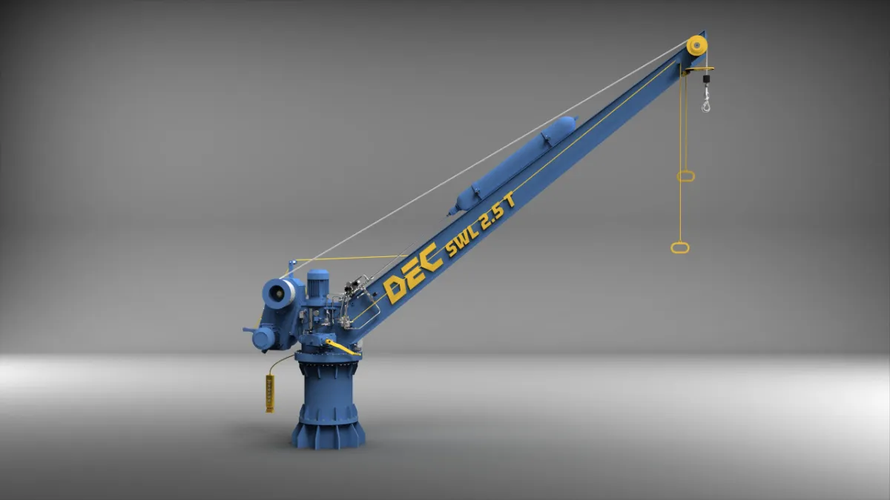

DEC LIFE RAFT & RESCUE BOAT SLEWING DAVITS
DEC Life Raft and Rescue Boat Slewing Davits are specially designed for safe and reliable deployment of life rafts and rescue boats in various emergency scenarios. The crane’s unique design ensures that in a dead ship condition, it can rotate up to 320 degrees using the energy stored in the accumulator, allowing for quick and efficient launching of both the life raft and the rescue boat into the sea without power. Additionally, in normal operations, the crane can be rotated electrically in both directions without any limitations, making it a highly versatile solution for marine applications. As an option, our davits can also be combined with a service winch, offering additional functionality for deck operations upon request. This allows the davit to be used as a provision crane, providing enhanced versatility for various tasks.
Standard Models of DEC Life Raft & Rescue Boat Crane:
✔SWL 1.5 tonnes @ 3.5 metre – with or without service winch
✔SWL 2.5 tonnes @ 3.5 metre – with or without service winch
✔SWL 2.5 tonnes @ 4.5 metre – with or without service winch

STANDARD FEATURES
✅ MED Certified – Compliant with international Marine Equipment Directive (MED) requlations.
✅ IMO, SOLAS, and LSA Compliant – Fully compatible with the latest International Maritime Organization (IMO), Safety of Life at Sea (SOLAS), and Lifesaving Appliance (LSA) regulations.
✅ Proven Design – Known for reliability, durability, and competitive pricing.
✅ Plug-and-Play System – Ready for immediate use, easy to install, and operate.
✅ Easy Operation – Designed for simplicity and ease of use during emergency situations.
✅ Compatible with All Brands of Rescue Boats – Can be used with a wide range of rescue boat brands.
✅ IP56 Electrical Motor – Ensures resistance to dust and water, even in harsh marine environments.
✅ Hydraulic Power Unit (HPU) Integrated into the Boom
✅ Stainless Steel Starter Panel – Mounted on the crane body for durability and ease of access.
✅ Gravity Lowering – Completely independent of any power supply, ensuring operation even in power loss scenarios.
✅ Hoisting in Normal Operations – Controlled by the electric motor for smooth and reliable operation.
✅ Manual Hoisting in Dead Ship Conditions – Hand-cranking option for emergency use.
✅ Dead Ship Slewing – Allows slewing of the rescue boat with energy stored in the accumulator.
✅ Manual Slewing – The crane can be manually rotated to both sides using a turning lever.
OPTIONAL FEAUTES:
🔹 Additional Provision (Service) Winch – Up to 2.5 tons capacity for added versatility
🔹 Heating System – For operation in cold climates or environments.
🔹 Other Custom Options – Available upon request to meet specific operational or regulatory requirements.